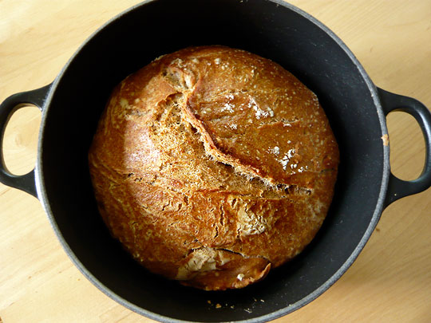

Bread

Description
Bread is delicious. It is a perfect companion to pretty much every meal.
Ingredients
- Flour
- Lukewarm Water
- Instant Yeast
- Salt
- Olive Oil
Instructions
-
Combine Flour, lukewarm water, yeast, salt and olive oil in bowl. Mix until
it becomes sticky
- Let dough rest overnight
- Remove dough from bowl and place into pan
- Let rest 2 hours
- Bake 20 minutes or until golden brown